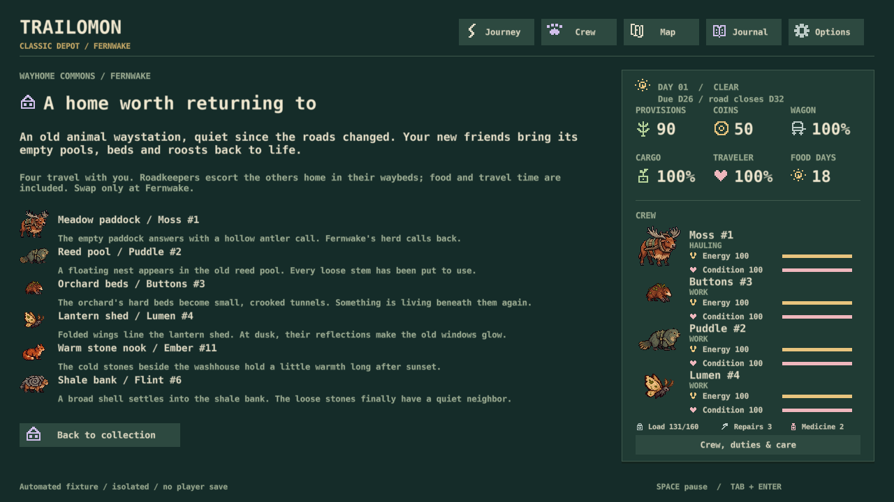
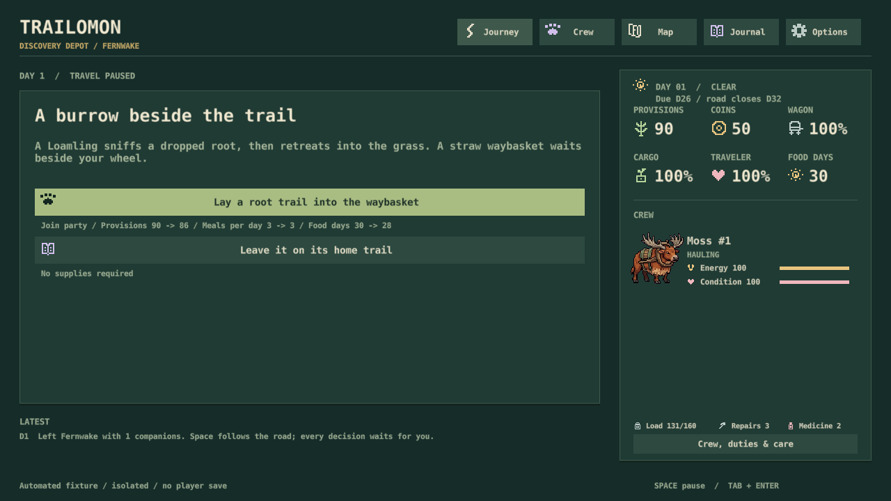
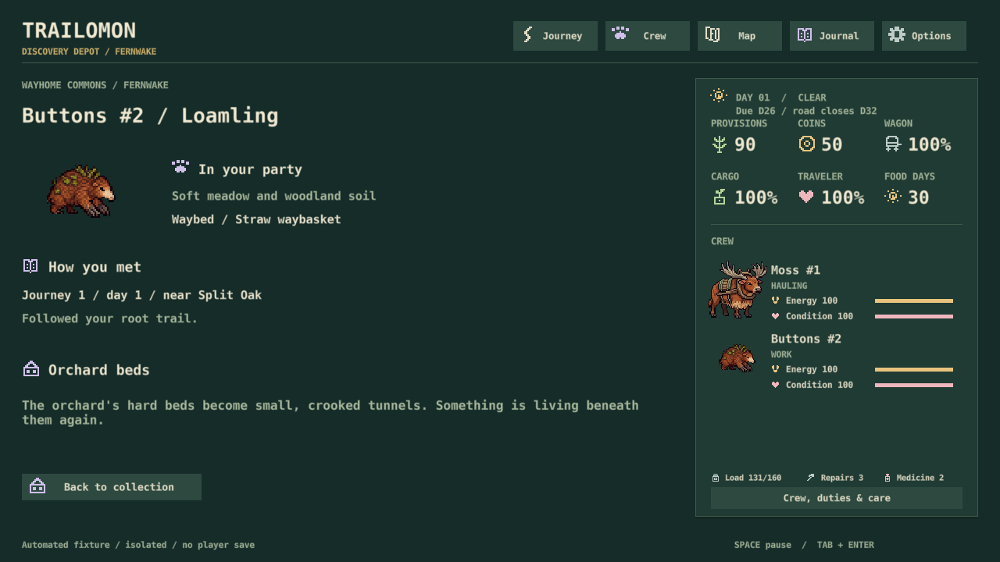

S38 · Collecting direction · November 2, 2026
A home worth returning to.
Your Proceed selects the recommended C1–C3 direction: Wayhome Commons, species-specific waybeds and individual stories. This is a progress report; there are no new decisions.
Try it: Collection → About the Commons, or Story beside any individual. In Discovery, meet Loamling at Split Oak and Bellmoth at Mossbell; habitat searches can find them too.

A reason to bring them home
The old waystation behind Fernwake is quiet after the roads changed. Each creature makes part of it a home again: reed pools, orchard beds, a lantern shed, warm stones. A creature can belong because you like it; it need not produce a resource.
One clue, one collecting moment
Loamling follows roots into a straw waybasket. Bellmoth chooses a shaded roost cloth. Each uses the existing 4-food invitation, with no extra day or hidden affection grind. The other four retain their meetings and rescues; all six now have a waybed and home habitat. More bespoke encounters can follow these first two.

Every individual has a story
New companions keep their meeting, journey, day and route area. Old friends have an honestly unrecorded past. Four travel with you; roadkeeper escorts take reserves home off screen, with their food and travel included. Only the first species arrival establishes a homecoming vignette; duplicates keep their own origins.

Scope: ledger, encounter writing and saved stories. No walkable ranch, construction, new art, combat rebalance or magical storage. The Foldyard alternative was not selected.
Validation: 172 simulation scenarios and native save/UI checks, including old saves, separate duplicate origins, all endings, included escorts and 1,000 owned individuals. Six actual game screens captured at 1280×720. These checks do not establish human pacing or audio quality.
Original C1–C4 proposal history
C1The Wayhome Commons
Your base is a neglected animal waystation behind Fernwake: meadow pens, warm stone piles, reed pools and enormous moth lofts. You travel to bring it back to life. Each collected creature becomes a named resident, and you choose four for the next expedition. A fighter can live here because you like it; every resident need not produce a resource.
Why: our lore already has small depots, displaced routes and animals with distinct habitats. The Commons gives retained companions a home and the player a personal reason to return.
Cost: small initial writing/collection-screen pass. A walkable ranch, construction and resident simulation come later. Recommendation: YES as the grounded foundation.
C2Win them over; pack a waybed
Each species has a short encounter based on its behavior. Loamling follows a trail of roots into a straw-lined travel basket. Bellmoth chooses a shaded roost cloth. A proud fighter tests your crew before approaching. You read one visible clue, choose an offering or action, then see it settle into a recognizable waybed. Taking its bed aboard is the collecting moment.
Keep this quick: a choice and a clear result, not a repeated feeding chore. Existing rescue-and-invite encounters remain valid. No universal ball, type chart, hidden affection grind, or requirement to knock everything out.
Why: the six species already have habitat behaviors and different help encounters. Those can become collecting methods instead of adding an unrelated minigame.
Cost: one small encounter per existing species, explicit conditions and receipts. Reuse current art. Recommendation: YES; prototype Loamling and Bellmoth first.
C3Bring home a story, not just a number
A resident keeps its name, individual record, home habitat and where/how you met. First arrivals add one short Commons vignette: a Bellmoth occupies the lantern shed; Loamlings rearrange the orchard beds. Duplicates are separate friends. Future collection goals can reveal gatherings and resident interactions without making every creature a worker or giving a permanent combat-stat bonus.
Why: our journal already stores names, memories and observations. This makes collection feed attachment and the next expedition without replacing delivery, food or recovery.
Cost: saved origin records and six short arrival moments first. Habitat scenes and interactions remain deferred. Recommendation: YES.
C4Alternative home: the Foldyard
If you want a stranger hook, the wagon carries an old cabinet whose drawers open into little stretches of living countryside. A waybed unfolds into the right habitat inside it. Your collection travels in this impossible refuge; only four companions are active on the road. Creatures can rest there, but it cannot transport the traveler, cargo or expedition supplies.
Tradeoff: this makes unlimited collecting physically legible and gives the wagon a memorable secret. It adds explicit magic to our currently grounded setting. It replaces C1's home location; C2 and C3 still fit. Choose C1 or C4, or describe a blend.
Cost: small rules/lore pass now; a distinctive interior is later art work. Recommendation: only if this whimsical tone excites you more than the Commons.